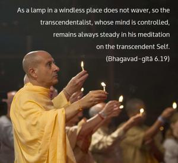

As a lamp in a windless place does not waver, so the transcendentalist, whose mind is controlled, remains always steady in his meditation on the transcendent Self.

A truly Kṛṣṇa conscious person, always absorbed in transcendence, in constant undisturbed meditation on his worshipable Lord, is as steady as a lamp in a windless place.